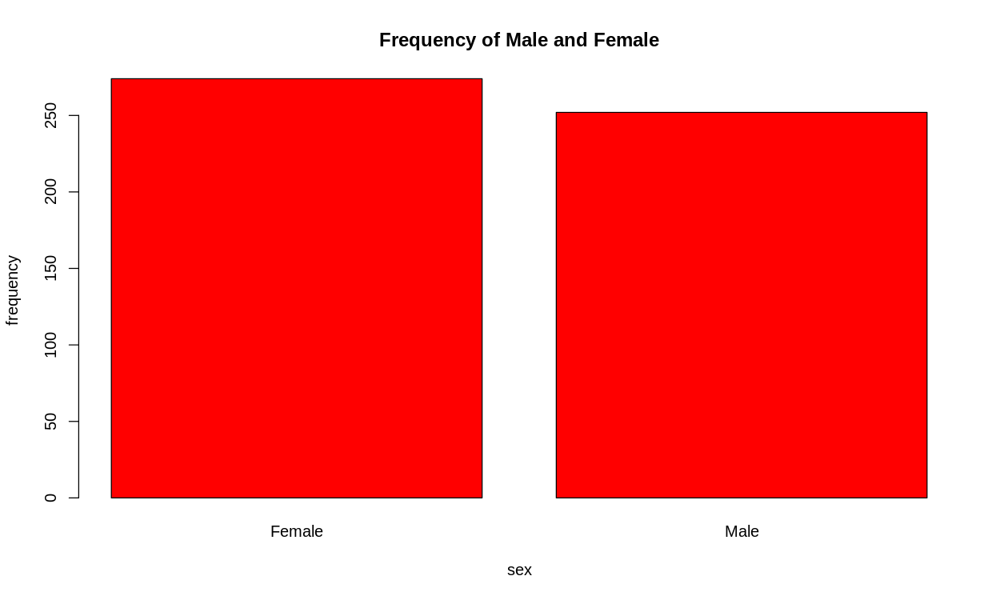

Question 1
1.a
library(tidyverse) ggplot(data = economics, mapping = aes(x = date, y = uempmed)) + geom_line(color = "orange") + # Set line color to orange labs( x = "date", y = "Median Duration of Unemployment (in weeks)", # Add y-axis label title = "Median Duration of Unemployment (in weeks) from 1970 to 2010" # Add plot title ) + theme_classic() + # Use classic theme theme(plot.title = element_text(hjust = 0.5)) + # Center the title coord_cartesian(ylim = c(-1, 25)) # reset y-axis
Except the slight difference in width and height of the graph, which is controlled by environment (and not explicitly specified), the plot should be exactly the same as given.

1.b
library(tidyverse) ggplot(iris) + geom_point(mapping = aes(x = Sepal.Length, y = Sepal.Width, col = Species)) + geom_smooth(method = "lm", mapping = aes(x = Sepal.Length, y = Sepal.Width), se=FALSE)
This should gives the plotting required

To fit the data separately, we should pass col to the mapping in geom_smooth too, in which case, a global mapping should suffice.
library(tidyverse) ggplot(iris, mapping = aes(x = Sepal.Length, y = Sepal.Width, col = Species)) + geom_point() + geom_smooth(method = "lm", se=FALSE)

Question 2
2.a
sum <- 0 for (i in seq(1, 99, by = 2)) { sum <- sum + i } print(sum)
The result is 2500
2.b
sum <- 0 for (i in seq(1, 100)) { sum <- sum + (i + 2 * i ** 2 + sqrt(i ** 3)) } print(sum)
The result is 722251.2
2.c
set.seed(42) sample <- rnorm(n = 2000, mean = 165, sd = 20) x.bar <- mean(sample)
And we have
> x.bar [1] 164.6886
2.d
Continue from codes above,
sd <- sqrt(var(sample)) se <- sd / sqrt(2000 - 1) ci <- c(x.bar - se * 1.96, x.bar + se * 1.96)
The 95% confidence interval is estimated to be
> ci [1] 163.8170 165.5602
And the true value 165 is in it. This is no surprise since we do sampling from the normal distribution and 95% is a pretty large range.
2.e
set.seed(42) sample_means <- c() n <- 10000 for (i in 1:n) { x.bar <- mean(rnorm(n = 2000, mean = 165, sd = 20)) sample_means[[i]] <- x.bar } sample_means <- as.numeric(sample_means) ggplot(data.frame(sample_means = sample_means), aes(x = sample_means)) + geom_histogram() + geom_vline(xintercept = mean(sample_means), color = "red") + labs( title = "Histogram of Sample Means", x = "Sample Means" )
The red vertical line is the mean of the sample_means, which is
> paste("Average of sample means = ", mean(sample_means)) [1] "Average of sample means = 165.004712566088"

The average of sample means is fairly close to the true value, which is not surprising as a result of law of the large number.
2.f
set.seed(42) sample_means <- c() n <- 10000 is_in <- 0 for (i in 1:n) { sample <- rnorm(n = 2000, mean = 165, sd = 20) x.bar <- mean(sample) sd <- sqrt(var(sample)) se <- sd / sqrt(2000 - 1) ci <- c(x.bar - se * 1.96, x.bar + se * 1.96) if (ci[1] < 165 & 165 < ci[2]) {is_in <- is_in + 1} }
The result is
> print(is_in) [1] 9508
The answer makes perfect sense. In 95.08% of the cases, the true value falls within the confidence interval. This is consistent with the definition of a 95% confidence interval.
Question 4
4.a
> library(haven) > WAGE1 <- read_dta("Downloads/WAGE1.DTA") > View(WAGE1) > mydata <- WAGE1
4.b
> head(mydata, 10) # A tibble: 10 × 24 wage educ exper tenure nonwhite female married numdep smsa northcen south west <dbl> <dbl> <dbl> <dbl> <dbl> <dbl> <dbl> <dbl> <dbl> <dbl> <dbl> <dbl> 1 3.10 11 2 0 0 1 0 2 1 0 0 1 2 3.24 12 22 2 0 1 1 3 1 0 0 1 3 3 11 2 0 0 0 0 2 0 0 0 1 4 6 8 44 28 0 0 1 0 1 0 0 1 5 5.30 12 7 2 0 0 1 1 0 0 0 1 6 8.75 16 9 8 0 0 1 0 1 0 0 1 7 11.2 18 15 7 0 0 0 0 1 0 0 1 8 5 12 5 3 0 1 0 0 1 0 0 1 9 3.60 12 26 4 0 1 0 2 1 0 0 1 10 18.2 17 22 21 0 0 1 0 1 0 0 1 # ℹ 12 more variables: construc <dbl>, ndurman <dbl>, trcommpu <dbl>, trade <dbl>, # services <dbl>, profserv <dbl>, profocc <dbl>, clerocc <dbl>, servocc <dbl>, # lwage <dbl>, expersq <dbl>, tenursq <dbl>
4.c
> summarize(mydata, mean(wage), max(wage), min(wage), median(wage)) # A tibble: 1 × 4 `mean(wage)` `max(wage)` `min(wage)` `median(wage)` <dbl> <dbl> <dbl> <dbl> 1 5.90 25.0 0.530 4.65
4.d
boxplot(mydata$wage, col = "cyan", ylab = "Hourly wage", main = "hourly wage box plot")

This box plot shows
- the distribution is skewed, to the right / top
- the sample is having some large outliers
- median is lower than the mean of the distribution
4.e
continued from above
barplot(table(mydata$female), names.arg = c("Female", "Male"), xlab = "sex", ylab = "frequency", main = "Frequency of Male and Female", col="red")

4.f
plot(x = mydata$educ, y = mydata$wage, col = "blue", xlab = "year of education", ylab = "hourly wage", main = "wage vs. education")

Question 5
Supervised learning is a machine learning algorithm that provides input data x and labels/goals y to a model and finds out how they are related. Common algorithms include regression and classification. Tasks such as handwriting recognition (the training set needs to be provided with a picture / grayscale matrix, and the corresponding character), translation (original language x and target language y).
Unsupervised learning is an algorithm that only provides x to the model and has the model perform its own learning tasks. This includes clustering, dimensionality reduction, etc. Such as PCA (only the input data x is provided).